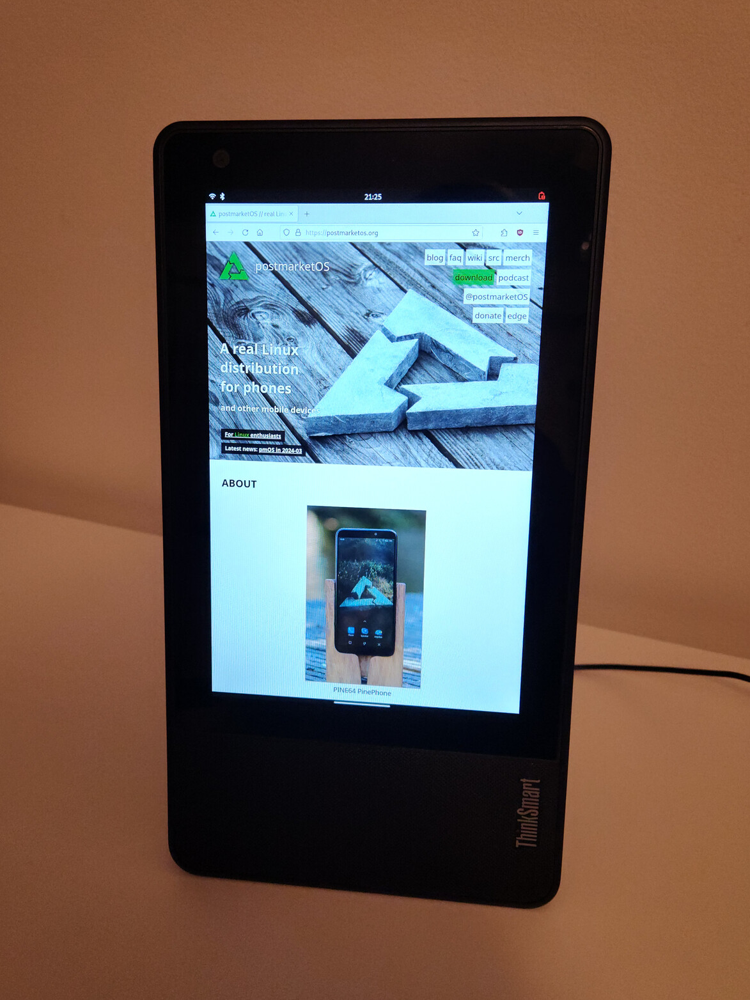

Lenovo ThinkSmart View (lenovo-cd-18781y)
|
 Lenovo ThinkSmart View (CD-18781Y) running postmarketOS | |
| Manufacturer | Lenovo |
|---|---|
| Name | ThinkSmart View |
| Codename | lenovo-cd-18781y |
| Model | CD-18781Y |
| Released | 2020 |
| Original software | Android |
| Original version | 8.1 |
| postmarketOS kernel | 6.8.0 |
| Hardware | |
| Chipset | Qualcomm APQ8053 |
| CPU | 1.8 GHz Cortex-A53 |
| GPU | Adreno 506 |
| Display | 800x1280 LCD |
| Storage | 8GB |
| Memory | 2GB |
| Architecture | AArch64 |
| Type | desktop |
| Unixbench Whet/Dhry score | 3755.6 |
{kind=link}
| USB Networking |
Works
|
|---|---|
| Flashing |
Broken
|
| Touchscreen |
Partial
|
| Display |
Works
|
| WiFi |
Works
|
| Mainline |
Works
|
| 3D Acceleration |
Works
|
| Audio |
Partial
|
| Bluetooth |
Partial
|
| Camera |
Broken
|
| Internal storage |
Works
|
| USB OTG |
Partial
|
| Accelerometer |
Broken
|
|---|---|
| Magnetometer |
Broken
|
| Ambient Light |
Broken
|
| Proximity |
Broken
|
The Lenovo ThinkSmart View is a desktop device that was originally intended to be used with video meeting software such as Microsoft Teams or Zoom. Its hardware is almost identical to the Lenovo Smart Display (SD-8501F/SD-X701B/SD-X501F), however the Smart Display series uses a different software and bootloader setup.
The product is based on Qualcomm's Home Hub / Smart Display 200 platform.
Contributors
Users owning this device
Bootloader
The stock bootloader is locked and secure boot is enabled. The bootloader can be unlocked via fastboot oem unlock-go but the device does not boot at all when the bootloader is unlocked. Re-locking the bootloader will restore the ability to boot.
The device can boot using lk2nd. This works around the secure boot limitations. For booting into lk2nd's fastboot mode an additional patch is currently required: smem: Validate hw_platform[hw_id] before referencing it.
How to enter flash mode
Due to the device not booting with an unlocked bootloader the device must be flashed using EDL mode. Hold down Volume Up + Volume Down while powering on the device to enter EDL mode.
The loader collection that comes with B. Kerler's EDL contains a working firehose loader for this device.
Installation
Use pmbootstrap to build your own installation image. The device requires lk2nd for panel and touchscreen selection.
The bootloader on the device cannot be unlocked at this time. The device does not boot when the bootloader is unlocked.
While secure boot is enabled, the device will accept any AVB1 signed image for booting.
Due to this any kernel or lk2nd image flashed to the boot partition will need to be signed by a tool such as magiskboot (using magiskboot sign lk2nd.img, for example) before flashing.
The images can then be flashed using EDL:
$ pmbootstrap init
$ pmbootstrap install
$ magiskboot sign <path to lk2nd.img>
$ edl w boot <path to signed lk2nd.img>
$ edl w userdata <path to rootfs img with kernel in ext2 /boot subpartition>
Hardware
Display
Two panel / touchscreen variants are known:
- BOYI Panel + Focaltech FT8201
- Innolux Panel + Himax HX83100A
The BOYI + FT8201 combo is fully supported. There currently is no working mainline touchscreen driver for the HX83100A.
Audio
Speaker
The device has one speaker connected to a Texas Instruments TAS5782M amplifier/DSP. The driver for this codec is currently a work in progress.
Microphones
The Device has two microphones, DMIC1 (MIC4 on the PCB) and DMIC2 (MIC3 on PCB). In the portrait orientation DMIC2 is above the Mic Mute slider and DMIC1 is below the Volume Down key. The ALSA UCM configuration for the device configures them as Stereo microphones with DMIC1 as the Left and DMIC2 as the Right channel.
Bluetooth Audio
Bluetooth Audio is connected to the Secondary PCM channel of the internal codec. There currently is no support for it in the mainline drivers. A patch was submitted but then abandoned: [alsa-devel] [PATCH 0/8] ASoC: qdsp6: db820c: Add support for external and bluetooth audio
Connectivity
USB
A USB-C connector can be found under the rubber foot at the top right corner of the device, when the device is in portrait mode. This USB-C connector supports USB2.0 and has pinouts for UART. It cannot provide power to connected peripherals.
USB OTG
USB OTG works but requires the use of an externally powered USB hub. Externally powered USB devices have not been found to work, whereas a USB hubs are working.
UART
UART can be found on the USB-C connector on pins SBU1 and SBU2 (A8 and B8 respectively). SBU1 is RX and SBU2 is TX. The bootloader serial configuration is 115200–8-N-1 and logic levels are at 1.8V (higher voltages, such as 3.3V, may damage the hardware).
WLAN
The device uses a Lite-ON WCBN3510A module connected via SDIO. This card contains the Qualcomm Atheros QCA9379-3 SoC for WiFi and Bluetooth. Support for the WiFi part in the mainline ath10k driver is a work in progress.
Using SSH through the WiFi connection is somewhat sluggish. This issue also exists in the original Android Firmware and may be caused by a bug in the WiFi adapters' firmware.
Bluetooth
Bluetooth is connected to the SoC via UART. Bluetooth audio is currently not functional, due to the abovementioned lack in PCM support on the audio codec. HID devices via Bluetooth have been tested and work.